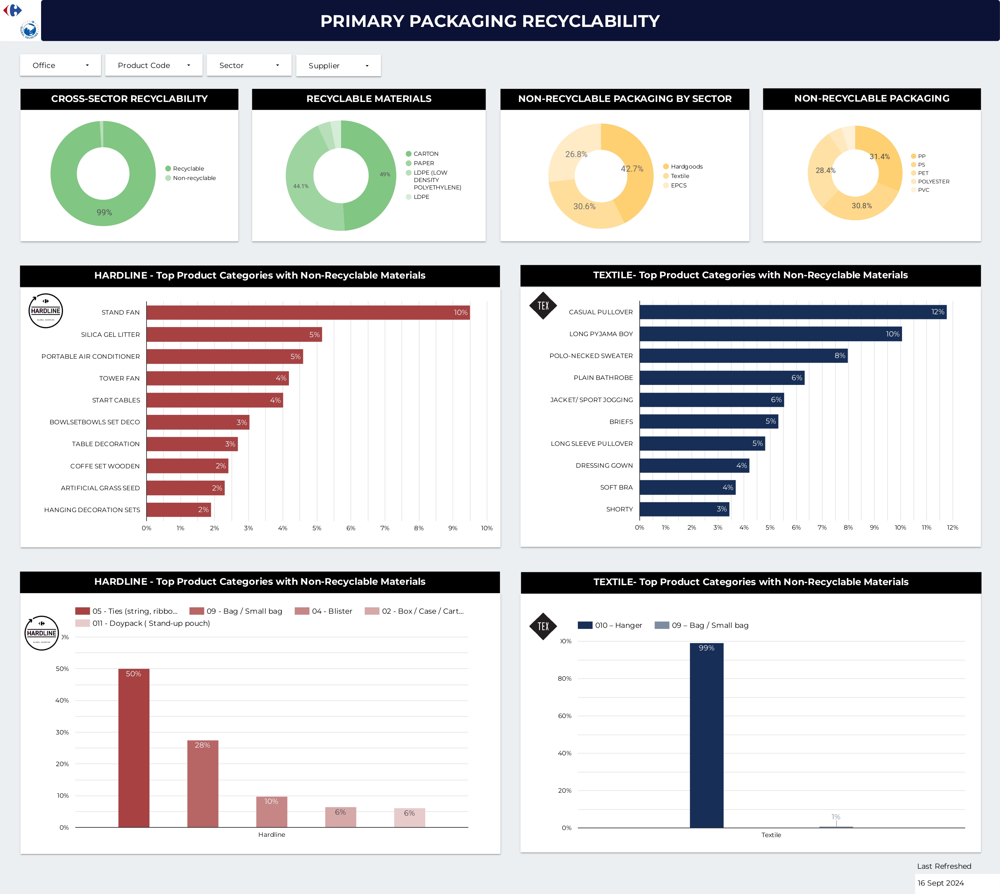

2024
2024
I am Julie WALI, a Data Analyst who graduated as an engineer specialized in Mechanical Engineering and Design.
During my five years at the University of Technology of Belfort-Montbéliard, I worked on a variety of projects that honed my problem-solving and project management skills. I also gained hands-on experience with design and modelization using softwares such as SolidWorks and Python, which helped me to develop strong technical abilities and deliver effective project outcomes.
I also realized two exchange semesters in China and South Korea, which enabled me to enhance my language skills but also exposed me to new and diverse cultures.
This passion for international and challenging experiences led me to pursue my career in Hong Kong at Carrefour Global Sourcing, a leader in the French retail market. There, I extensively used Excel, PowerPoint, and Google Looker Studio to analyze data, present insights, and manage projects. Despite having no prior skills in these roles, I adapted quickly, understanding the challenges and requirements of each position. As a Costing Intern, I established should-costs based on cost breakdowns and by analyzing prices and market trends. As a CSR Data Analyst, I led multiple projects, including a strategic project where I managed it from start to finish, using my analytical skills to support Carrefour’s sustainable packaging targets.

As a Data Analyst at Carrefour Global Sourcing, I led a project to develop and launch a packaging data collection tool. I was responsible for designing the data collection template and overseeing the tool's rollout. After the launch, I created dashboards with KPIs to track packaging details.
These KPIs were aligned with Carrefour's four sustainability objectives: Eliminating unnecessary packaging, Enhancing recyclability, Using sustainable paper and cardboard, and Incorporating recycled plastic.
First, I segmented the KPIs by sector, focusing on Hardline for all Hardgoods products and Textile for Garment products. I then conducted a deep dive to identify the key product categories and material types that required the most attention to meet our sustainability objectives.
.jpg)
In this project, the goal is to clean and standardize the dataset using MySQL. This involves removing duplicates, standardizing the data (such as trimming values, using appropriate data types, and filling in blank cells), and preparing it for more detailed analysis.
Once the data is clean and standardized, we can conduct in-depth analysis and utilize visualization tools to gain further insights.
I completed several personal projects using Python. One of my projects involved programming a Python script to automate file organization by creating folders for images, PDFs, and spreadsheets, and then sorting files into these folders based on their extensions (.png, .jpg, .pdf, .csv).

This project aims to analyze data from a survey of 630 data professionals. The goal is to provide insights into various aspects of the data industry, such as average salaries, popular programming languages, work-life balance, and career transition difficulty, using Power BI.